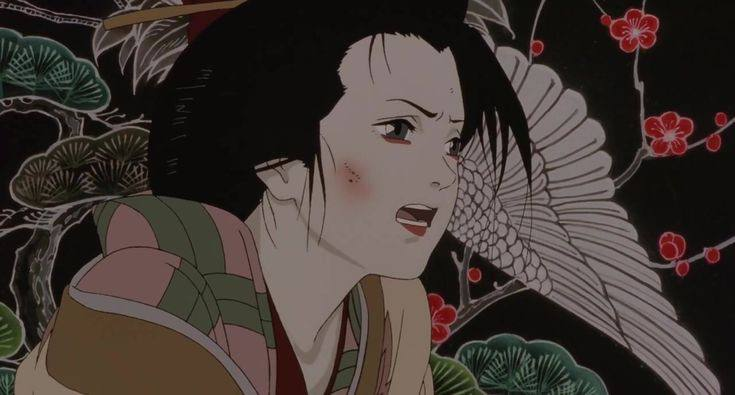

Какими приемами режиссёр стирает границу между реальностью и снами? Как его картины передают одиночество человека в Мегаполисе и почему все фильмы японского автора до сих пор актуальны? Обо всем этом в нашей статье о творчестве Сатоси Кона.
Великий путешественник по границе между грёзами и реальностью, мастер закрученных сюжетов и игр разума, настоящий классик аниме не доживший и до 50 лет. Наша статья о Сатоси Кон - культовом японском режиссере, чьи фантазии вдохновляли Даррена Аронофски и Кристофера Нолана, но сам он как будто не очень известен широкой публике. Его изобретательные, сюрреалистичные, неформатные аниме не так оптимистичны и доступны как произведения Хая Миядзаки. Не так сентиментальны, как картины Макото Синкая. Но ярче многих других фильмов демонстрируют возможности киноязыка и передают работу сознания так, как это может делать только анимация.
Если посмотреть на фильмографию режиссёра, то она поражает разнообразием. За десятилетнюю карьеру как самостоятельный автор, он снял всего четыре полнометражных фильма и один сериал, но все они в разных жанрах.
«Истинная грусть» - жёсткий психологический триллер о серийном убийце, который преследует бывшую солистку поп-группы.
«Агент паранойи» - мистический детектив меняющий жанр каждую серию, от хоррора до чёрной комедии, от городского фэнтези до эротического триллера.
«Паприка» - головоломная научная фантастика об учёных, которые научились проникать в чужие сны.
«Актриса тысячелетия» - мелодрама о пожилой кинозвезде, которая вспоминает карьеру и любовь всей своей жизни. И наконец «Однажды в Токио» - рождественская сказка о троице бездомных, которые спасают младенца.
Такой разброс жанров демонстрирует огромный режиссёрский диапазон Сатоси Кона, который одинаково успешно умел и нагнетать саспенс, и выжимать слезу, и смешить.
.jpg)
Во всех его картинах прослеживаются общие темы и мотивы. В большинстве фильмов Сатоси Кона можно увидеть тревожный образ города, а все его герои так или иначе испытывают одиночество, затерянность отдельного человека в Мегаполисе, и страх показать окружающим свое истинное лицо. Сериал «Агент паранойи» рассказывающий об оживших неврозах большого города, буквально в заставке визуализирует это ощущение. При этом, Мегаполис у Кона не разумный океан или бескрайняя тьма. Это очень зарегулированное пространство - артерии дорог, силуэты домов и глазницы окон. Четко разделяя территории общественного и личного, формируя дополнительное ограничение внутри кадра, загоняя в них героев.
«Тебе не кажется, что сны и интернет похожи? Они оба - отдушина для усталого разума».
Цитата из «Паприки»
Пространство фильмов Сатоси Кона наполнено двойниками, а отражение в стёклах и зеркалах иногда начинают жить собственной, параллельной жизнью. Двоятся не только герои, но и мезосцены в которых они оказываются. Повторяющиеся кадры отражают зацикленную логику снов и прихотливую работу памяти. Еще режиссер часто прибегает к приему, когда происходящее в кадре внезапно для зрителя оказывается изображение на экране телевизора, кинотеатра или компьютера.


Режиссёр средствами анимации передаёт не только вид аналоговых мониторов, но и фотографии. Почти монохромную гамму, когда речь идёт про сцену из начала XX века. Слоу-мо, субъективную камеру и съёмку с рук, чтобы передать ощущение игрового кино. Все эти хитрые и сложносочинённые приёмы Сатоси Кон использовал чтобы точнейшим образом передать на экране внутреннюю жизнь и работу подсознания человека. Как например в одноминутной короткометражке под названием «Доброе утро», которая простыми средствами показывает, ЧТО чувствует человек, когда только проснулся.
Сатоси Кон умер в 2010 году от рака поджелудочной железы. Он прожил всего 46 лет и нереализованных идей у него осталось больше, чем снятых фильмов. Его сюрреалистичные миры вдохновляли других режиссёров как в игровом кино, так и в аниме. Но сам он остался уникальным автором, чья безудержная фантазия и свобода обращения с киноязыком сочетались с мудрой и внятной критикой современного общества. И пускай сам он вышел за пределы кадра и за пределы жизни, но его творчество навсегда останется живым доказательством того, что в кино нет ничего невозможного.